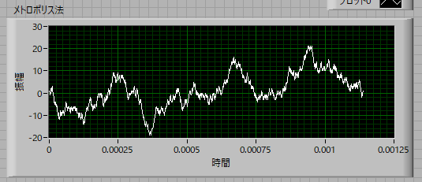
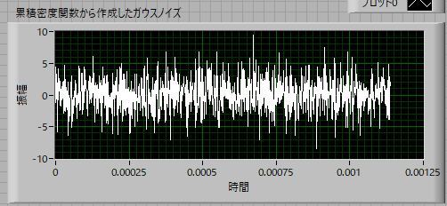
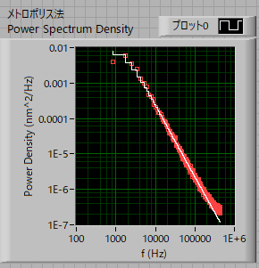
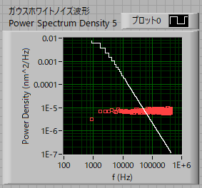

ランダムな数の発生方法-05
５．正規分布からの乱数とバネで拘束されたゆらぎとの違い
次に，実際に，Labview，エクセルで正規分布の乱数を作成してみましょう．
このように，正規分布に従う乱数を作成することができたので，さっそくバネで拘束されたゆらぎ波形を作ってみようと思いたいのですが，思わぬ落とし穴があります．
実は，単に正規分布に従う乱数を発生させただけでは実現できないのです．
実際の波形を見てみましょう．
メトロポリス法で作成した波形がこちらです．
メトロポリス法

次に，正規分布に従う乱数から作成した波形がこちらです．
正規分布に従う乱数

どちらも同じ，平均値，分散値ですが，明らかに異なります．
これは，
バネで拘束されたゆらぎ（メトロポリス法）は一個前の情報に依存する
単に乱数から作成した場合には，過去の情報に依存しない
からです．
バネを例に挙げると，
一瞬で端から端まで移動することはあり得ない
のです．これをマルコフ過程と呼びます（たぶん．．．）
実際に，パワースペクトルを計算してみると，
メトロポリス法

こちらでも説明したように，ローレンツ型の波形となりますが，
正規分布に従う乱数

においては，ホワイトノイズとなります．
これは，Labviewにおけるアイコン，
ガウスホワイトノイズ
ガウスホワイトノイズ波形
も同様で，パワースペクトルを計算してみるとホワイトノイズとなります．
ですので，単に正規分布に従う乱数を作ったからと言ってバネゆらぎのような物理現象は再現できないようです．